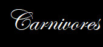
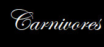
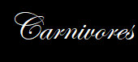

Nectarivore is an animal who eats necter and gets its energy and nutrient requirements from a diet.
In addition to dimunitive teeth, nectarivores have fused mandibles and upper canines that are worn from contact with the lower canines (thegosis). These characteristics may be necessary for the lower jaw to support an elongated, mobile tongue.
In zoology, a nectarivore is an animal which derives its energy and nutrient requirements from a diet consisting mainly or exclusively of the sugar-rich nectar produced by flowering plants. Nectar as a food source presents a number of benefits as well as challenges.
